Pages¶
What each dashboard page shows and who can use it.
Every page requires sign-in. A user account sees only its own sessions; aggregates are shared with every signed-in user. See Privacy.
Note
The screenshots on this page are a fictitious five-person team (Ivy, Marcus, Priya, Tomás, Yuki) on a demo server, not a real deployment.
Header¶
The header above every page holds an agent selector and an account selector. Pages that support them narrow their data to the selected agent and account. The account selector only appears when the signed-in account can see more than one account; a user account with no other account visible to it never sees the row.
Overview (/)¶
The page you land on after sign-in.
Four summary cards report the trend chart's current range: Total Cost, Total Tokens, Active Users, Total Events. Total Cost carries a note that the figure is an estimate from API-priced usage, and that a subscription plan's own fee is prepaid separately from it.

Below the cards:
- A filter bar: Cost/Token view, model category (All/Claude/Codex/Compatible), group by Model/by User, and model/user dropdown filters.
- Cost Trend: a stacked area chart at Minute or Hourly granularity, and a stacked bar chart — one bar per bucket — at Daily, Weekly, or Monthly granularity. Date opens a custom since/until range. Unknown toggles a stacked segment for subscription burn the dashboard could not measure directly — an estimate from the gap between the provider's own usage meter and what OTEL/JSONL reported, with no user or model attribution; it is disabled when the range cannot support the estimate (a project, user, model, or agent filter is active, for example). Selecting a point on the chart narrows the cards and the panels below it to that point's range. A footnote states how much of the range's subscription burn the chart could measure, for example "Measured usage covers ≈100% of subscription burn over the last 7 days · readings span 100% of the range"; hover it for the method and, where eligible, each account's own fit.
-
Subscription burn (collapsible; labelled "preview" while collapsed): how much of each connected Claude/Codex subscription's quota window has been spent, per billing account. Toggle 5h/7d windows and Claude/Codex providers; Accounts draws one line per billing account, Weighted adds a price-weighted cross-account average (shown only once more than one priced account is on screen). The axis is inverted — 0% at the top, 100% consumed at the bottom — so a line's height is what is left of that window, and a reset reads as the line jumping back up. The headline reads "\<window> X% consumed · $Y of $Z left"; the footer states how many $/mo of subscription spend the chart could weight, and names any account it left out (an unpriced plan, or one with no reading in range).
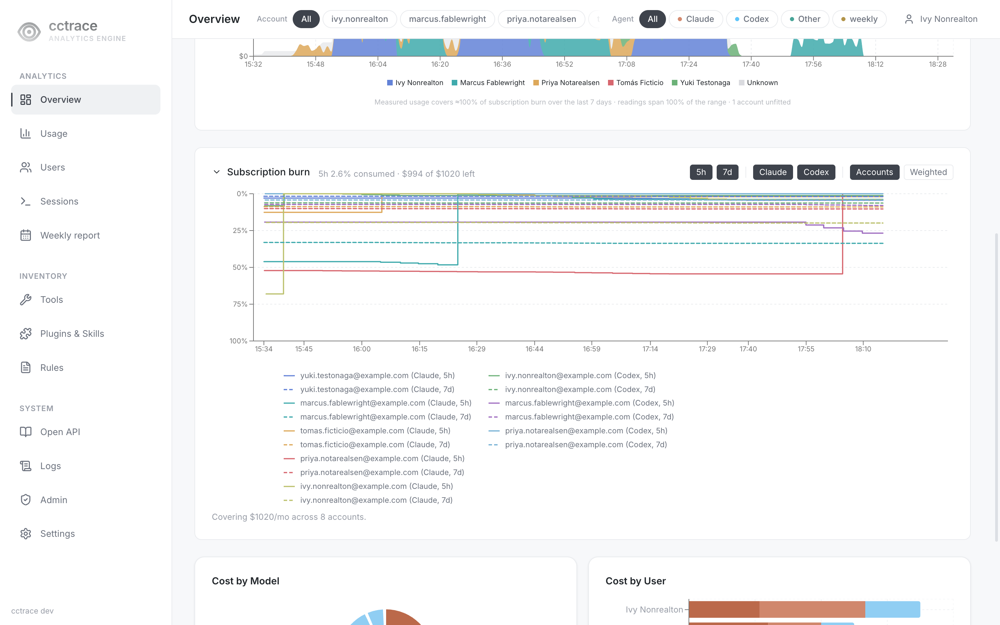
Cost Trend switches from area to bar at Daily already, and stays bar through Weekly and Monthly. Subscription burn stays a step line until Weekly or Monthly, where it switches to one bar per bucket carrying a time-weighted average — because a step line would otherwise collapse into unreadable hatching across that many quota resets.
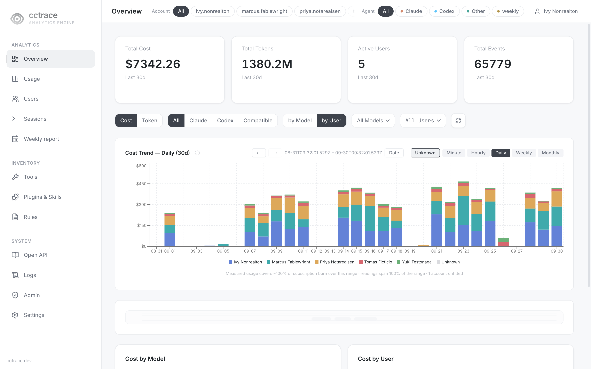
- Cost by Model and Cost by User: the same range's totals from the two other angles, as a pie chart and a stacked bar.
Usage (/cost)¶
The same Cost Trend chart as Overview, followed by the full per-user, per-model breakdown behind it: Requests, Input Tokens, Output Tokens, and Cost (or Total Tokens in Token view), sorted by cost and totalled in a footer row. The search box filters the table by user or model.
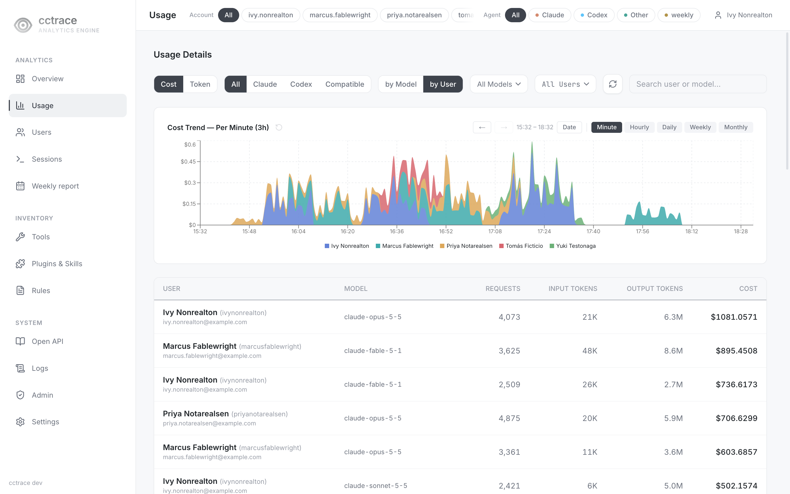
A row with no owner and the label weekly is not a person — it is the tokens the server's own Codex account spent building the weekly AI report; hover it for the explanation.
Users (/users)¶
The Analytics tab lists users by cost. Selecting a person's card opens an inline Detail View next to it. Administrators also get the Management tab, described in Users.
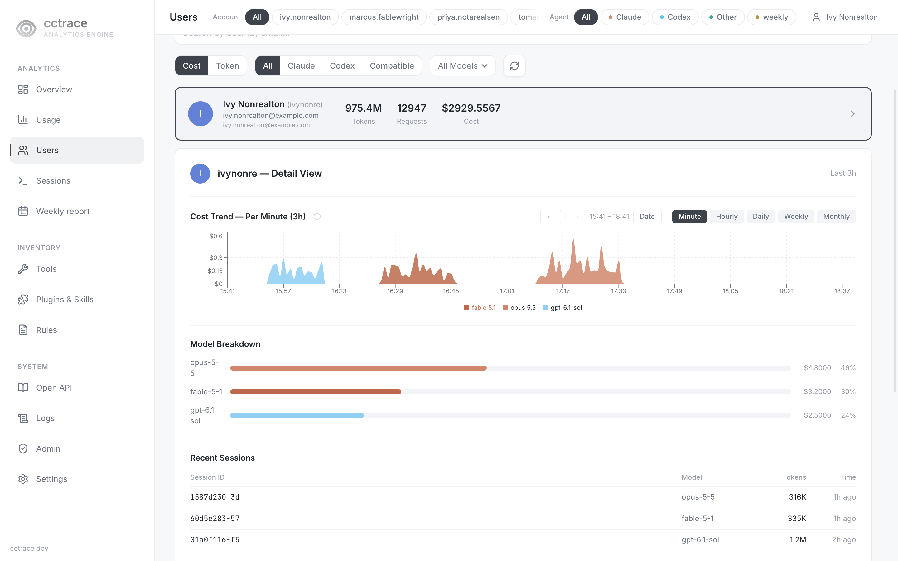
Sessions (/sessions)¶
A session list on the left and the selected session's transcript on the right.
- Select a session in the list to open its transcript. The list loads more as you scroll and shows how many sessions match out of the total.
- Assembled merges related session files (subagents, branches) into one conversation. Raw shows each file's records as they are, grouped by file.
- Interactive (the default) shows sessions with human turns, Headless shows machine-driven sessions such as
claude -p, All shows both. - The project picker narrows the list to one project. The search box filters the loaded sessions by session, user, or project.
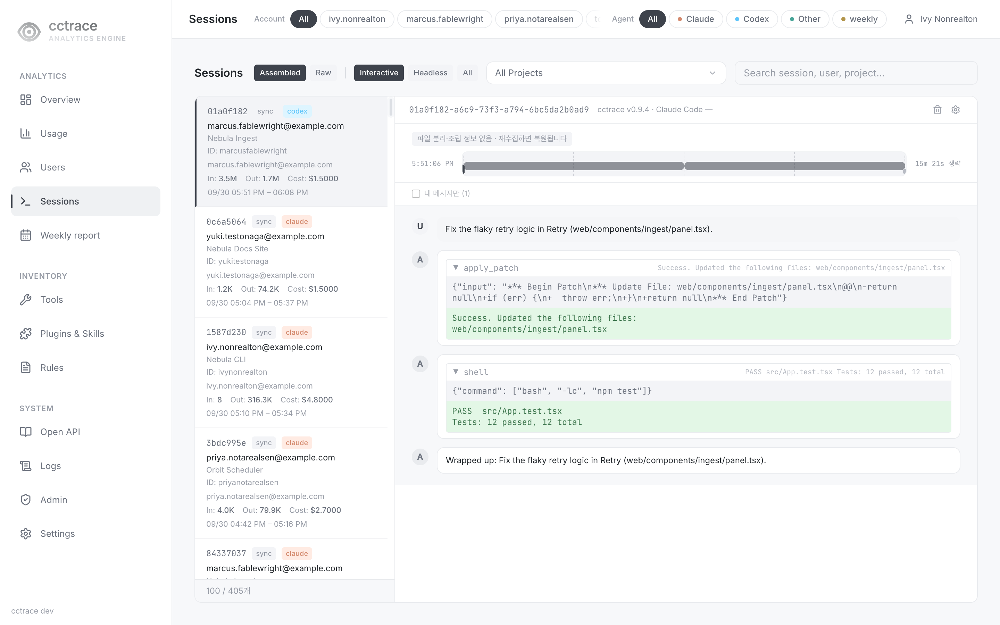
A transcript's tool calls render for what the recording agent actually sent: a Claude session's Read/Edit/Bash steps —
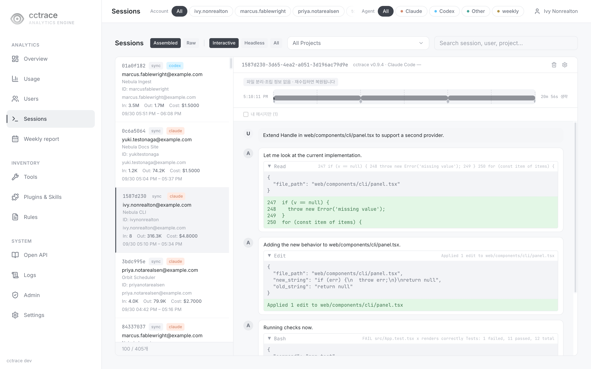
— and a Codex session's apply_patch/shell steps, filtered here to sessions tagged codex with the Agent selector:
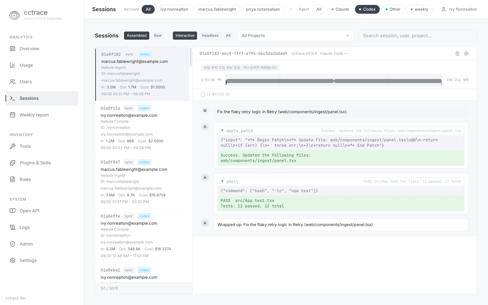
Delete a session¶
The trash icon in the transcript header (tooltip 세션 삭제) deletes the session's records and the events and metrics attached to it. This cannot be undone, and the server refuses the session if a client uploads it again.
| Who | Can delete |
|---|---|
admin |
Any session. The dialog then offers to delete the project's other sessions and to stop collecting the project. |
user |
Their own sessions, while the owner-delete policy allows it (the default) |
Administrators set the owner-delete policy and remove projects from the blocked list in the gear dialog next to the trash icon (세션 수집 설정). They can also delete a whole project from the project picker.
A user account's own sessions¶
A user account's /sessions is the same list-and-transcript page, narrowed to its own sessions with no Account selector (and no Admin entry in the sidebar):
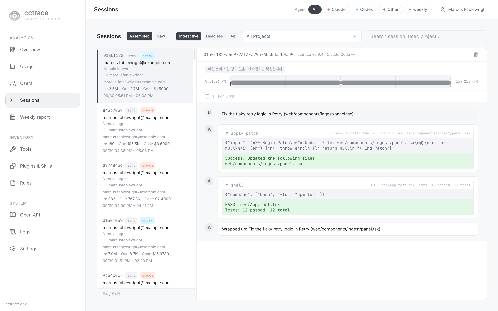
Weekly report (/weekly)¶
A signed-in account's own record for one calendar week, navigated with the arrows next to the week label; a week in progress is marked so, and a week that has not started yet is not reachable.
The summary line under the title counts that week's sessions by agent and its rule-derived "work segments" (Claude Code 세션 N · Codex 세션 N · 작업 구간 N); it also carries any caveats that apply that week, for example the same OTEL-metric scope note used on the Tools page for Codex tool counts, records an administrator excluded from analysis, or sessions not covered by a work-segment fact.
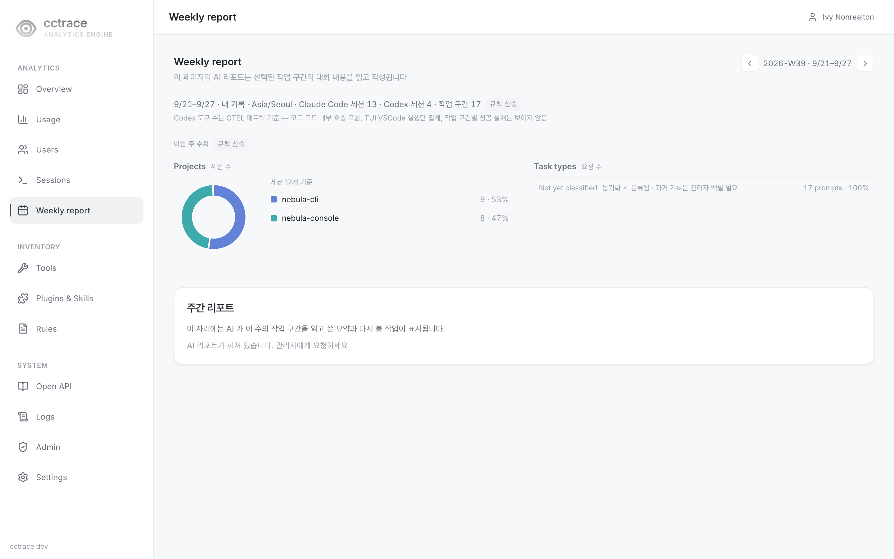
- Projects: a donut of that week's sessions by project.
- Task types: the week's turns grouped by task type; selecting a type opens its underlying session segments. A dataset with no classification run yet shows every turn as Not yet classified.
- The AI report panel reads the week's task segments' conversation content and writes a summary and a to-revisit list — off by default, and shown as "AI 리포트가 꺼져 있습니다" until an administrator turns it on.
Tools (/tools)¶
Claude Code and Codex tool calls over the last 30 days: total uses, successes, failures, and the overall success rate, then a per-tool table with a success-rate bar.
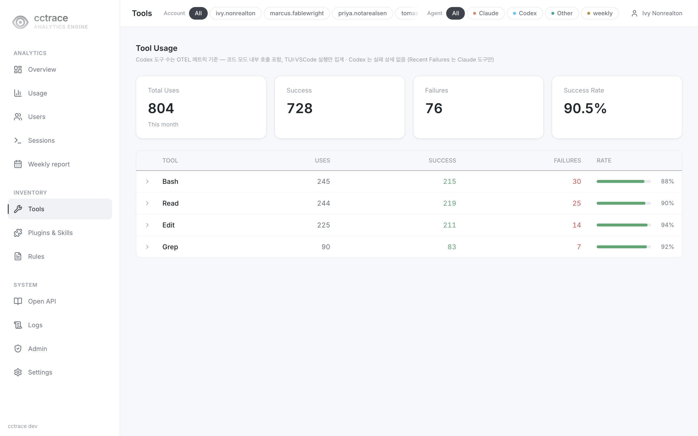
A scope note under the title states what the Codex figures rest on: Codex's tool counts come from its codex.tool.call OTEL metric, which counts calls made inside a code-mode exec script and is sent only by TUI and VS Code runs; Codex also carries no per-call failure detail, so a tool's expandable Recent Failures list is Claude's calls only.
Plugins & Skills (/plugins)¶
Calls to Claude Code slash commands and skills, and Codex skill injections, grouped by plugin or skill name.
- Period: 7d, 30d (default), 90d, All.
- Summary cards: Claude Calls, Codex Calls, Avg Tokens, Total, Input, Output tokens.
- Views: By Skill, By User, By Project. By Project counts only sessions in git repositories.
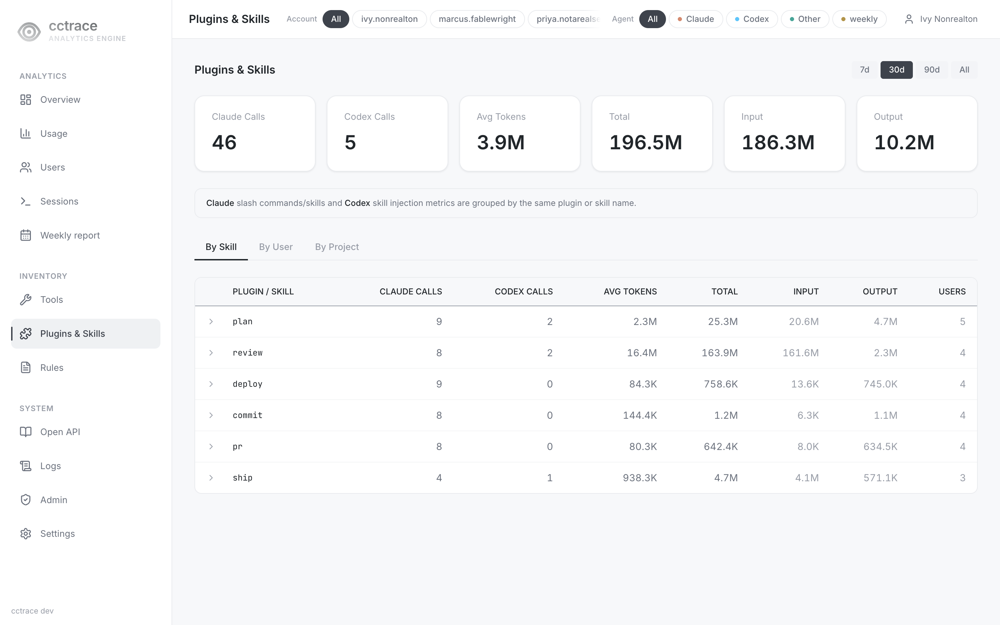
/skills redirects here.
Rules (/rules)¶
The CLAUDE.md and AGENTS.md files the client found in the git repositories your sessions ran in, with their version history.
- Filter by text, status (Active, Missing), and repository. Summary cards count Repositories and Rule Files.
- Select a file to read a version and add comments to it.
- A
useraccount sees rule files only from repositories where it has sessions.
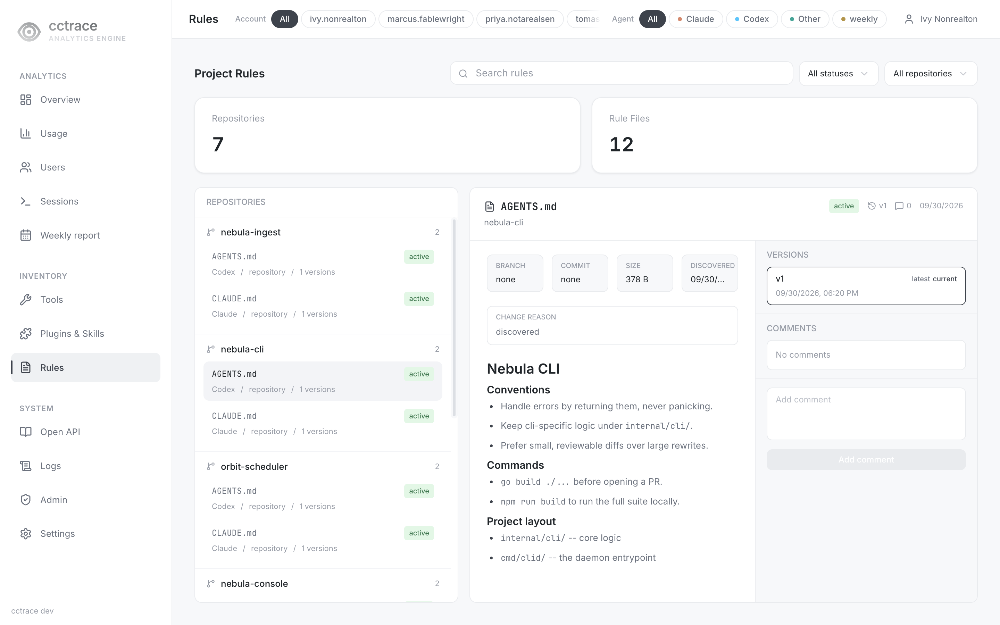
Logs (/logs)¶
Raw telemetry from the last 30 days, 50 rows per page.
| Tab | Columns |
|---|---|
| Events | Time, Event, Model, Session, User, Input, Output, Cost, Age |
| Metrics | Time, Metric, Model, User, Value, Session, Age |
Logs are not limited to your own data. Attributes that carry free text, such as prompts and tool output, are removed before they reach the page.
Admin (/admin)¶
Visible only to administrators.
| Tab | Shows |
|---|---|
| Clients | Each client that reported a version: Profile Email, Name, User ID, Client Version, Last Seen, Status |
| Storage | Retention, table sizes, and free space on the data volume. Retention is edited here; see Operations. |
/versions and /storage redirect to /admin.
The Excluded Accounts, Unpriced Models, Insights, and AI tabs are under active development and are not documented here.
Settings (/settings)¶
- Change Password: enter the current password and a new one of at least 8 characters. An account with a temporary password is sent here until it changes it.
- Appearance: accent color, agent tone, and whether the logo mark is shown.
The API token and billing account sections are under active development and are not documented here.
Pages under active development¶
These pages exist and are under active development. They are not documented here.
| Page | Sidebar entry |
|---|---|
/open-api |
Open API |